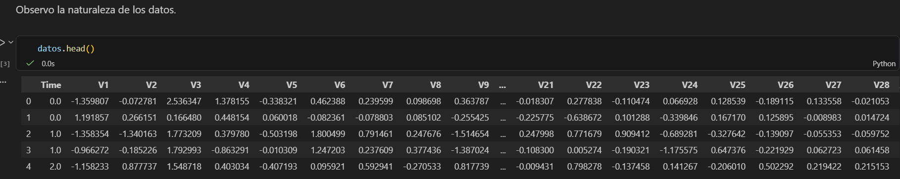

Detección Antifraude: Optimización de Modelos bajo Desbalance Extremo
A diferencia de los problemas de clasificación estándar, la identificación de fraudes con tarjetas de crédito nos enfrenta a un escenario asimétrico: el dataset cuenta con un porcentaje minúsculo de transacciones anómalas distribuidas en un mar de operaciones legítimas.
Pipeline de Desarrollo (Notebook de Jupyter)
Seleccioná cada etapa del flujo de trabajo para inspeccionar los bloques de código y el comportamiento de las dependencias (hacé clic para ampliar):

Impacto Operativo: ¿Recall o Precision?
En sistemas financieros, un Falso Negativo (fraude no detectado) es exponencialmente más costoso que un Falso Positivo (bloqueo preventivo). Si el sistema frena una transacción válida, el cliente sufre una fricción menor; pero si aprueba un fraude, el costo de contracargo impacta directo en la empresa. El balance fue priorizar el Recall sin destruir la experiencia de usuario.
Resultados Finales del Clasificador
Métricas finales calculadas sobre el conjunto de test independiente e histórico de clasificación interactivo:
Al asignar el atributo class_weight='balanced' dentro de RandomForestClassifier, forzamos al modelo a penalizar severamente los errores cometidos sobre las muestras de la clase minoritaria. Los resultados confirman que se logró capturar más del 85% de los comportamientos maliciosos con un margen de falsos positivos sumamente controlado.
💡 Puedes explorar el Dataset Original en Kaggle provisto por el MLG (Machine Learning Group) de la ULB, o inspeccionar el flujo de entrenamiento completo directamente en el Repositorio de GitHub del proyecto.